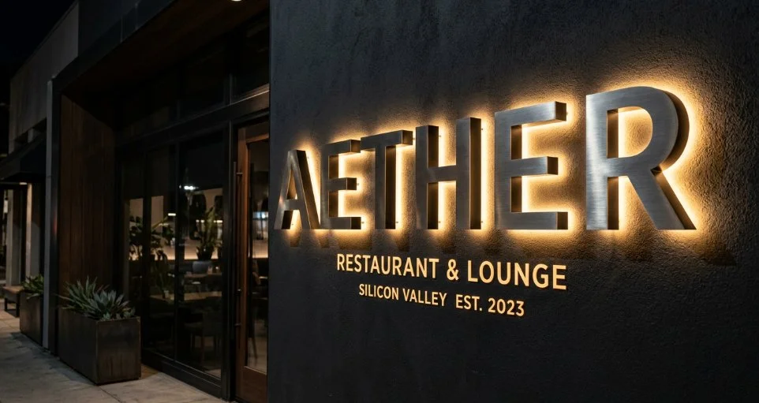
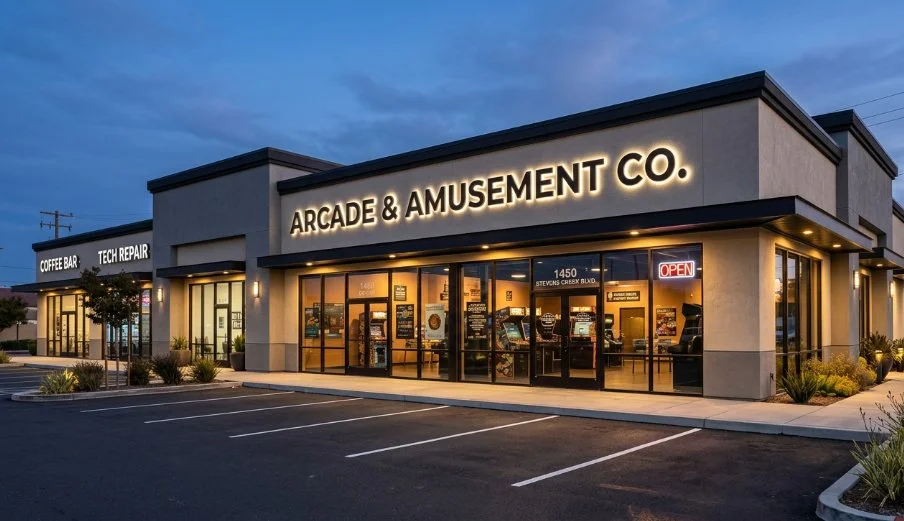
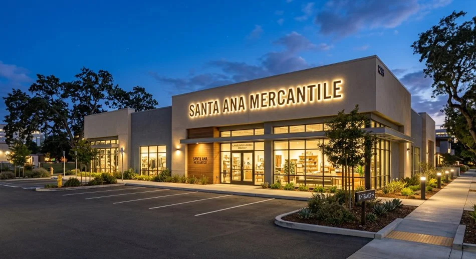
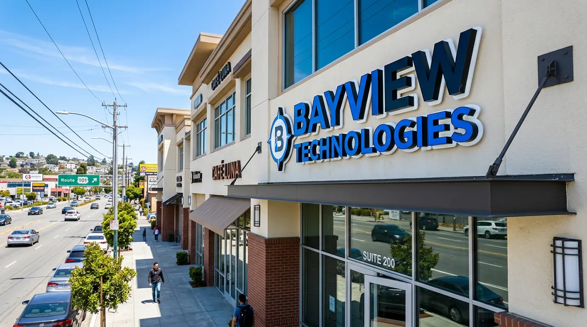
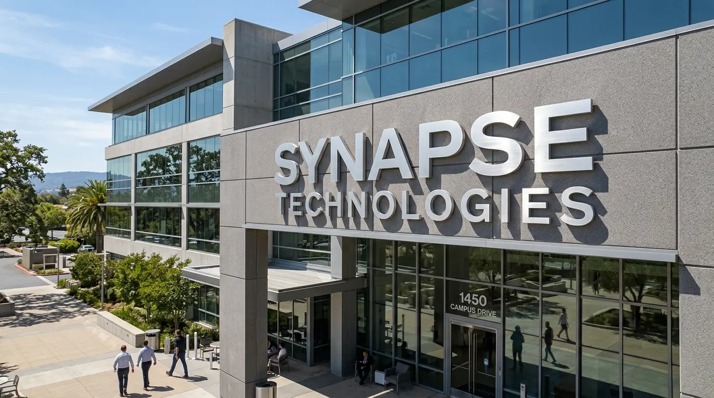

Custom front-lit, halo-lit, and open-face channel letter signs for retail, restaurant, and commercial storefronts. Designed, permitted, fabricated, and installed by our San Jose team — serving the entire Bay Area.
Channel letters are three-dimensional individual letters — each one a fabricated metal housing with a face, sides (the "returns"), and an open back — mounted directly to a building wall or a raceway. They're the most common type of illuminated storefront sign in the Bay Area, and for good reason: they're highly visible day and night, they can match virtually any brand color and font, and they read as premium compared to flat printed signs or backlit cabinets.
Standard channel letters are fabricated from aluminum — typically .063" or .090" aluminum for the returns and back, with a translucent acrylic face in your brand color. LED modules mounted inside illuminate the face from behind. The result is a bright, even glow that holds up well in California's UV environment, draws the eye at night, and lasts 7–10 years with minimal maintenance.
Most illuminated channel letter installations in the Bay Area require both a sign permit and an electrical permit. The electrical connection must be made by a licensed electrician. We manage the complete process — permit drawings, City submittal, landlord approval package, fabrication, installation, and electrical coordination — so your new sign goes up without delays or compliance issues on opening day.
In San Jose, channel letter sign permits are submitted through SJPermits.org and require scaled sign drawings showing letter height, overall sign area, mounting method, and electrical specs. Most commercial properties also require landlord or property management approval before permit submittal — we prepare that package too. Permit review times in San Jose currently run 3–6 weeks. Other Bay Area cities have their own processes; we're familiar with permitting across Santa Clara, Sunnyvale, Fremont, and the broader Silicon Valley corridor.
Retail storefronts, restaurants, medical offices, and corporate buildings — illuminated and non-illuminated channel letters installed across Silicon Valley and the South Bay.

Halo-Lit · Restaurant & Lounge
Front-Lit · Multi-Tenant Commercial
Front-Lit · Retail at Dusk
Halo-Lit · Restaurant & Bar
Non-Illuminated · CorporateThe type of channel letter you choose affects the look, the cost, the electrical requirements, and what your landlord's sign criteria will allow. Here's a clear breakdown.
The most common type — LED modules inside each letter shine through a translucent acrylic face in your brand color. High visibility day and night. Clean, professional, and the most cost-effective illuminated option. Available in virtually any PMS color via matched acrylic face material. Suitable for nearly every commercial storefront and zoning district.
Most Common · Best ValueLEDs face the wall rather than forward — the light bounces off the building surface and creates a glow around each letter. The letters themselves appear as solid metal (typically brushed aluminum or painted steel), with no visible illuminated face. The result is a premium, architectural look that photographs exceptionally well. Common for upscale retail, hospitality, and corporate buildings where the brand aesthetic skews high-end.
Premium Look · Corporate · HospitalityBoth the face and the wall behind the letter are illuminated — the letter face glows in your brand color and a halo appears behind each letter simultaneously. This is the most visually striking configuration and the most impactful at night. Common for flagship retail locations, restaurant signage on high-traffic corridors, and entertainment venues.
Maximum Impact · Flagship · Night VisibilityLetters with no acrylic face — the LED or neon-flex tubing inside is visible from the front, creating a retro neon glow effect. Popular for bars, restaurants, barbershops, and creative retail concepts in the Bay Area that want a distinctive vintage-modern aesthetic. Not permitted in all zoning districts — we check the sign criteria before quoting this style.
Bars · Restaurants · Creative RetailAcrylic letters are pushed through cutouts in a flat aluminum panel rather than using individual fabricated returns. The lit acrylic face protrudes slightly from the panel surface. A cost-effective alternative to full channel letters for businesses with a tighter budget or shorter return walls that make standard channel letter returns impractical.
Budget-Friendly · Flat PanelFlat-cut or fabricated metal or acrylic letters with no internal lighting — painted or polished and mounted directly to the building face. Required in some Bay Area cities and properties where sign criteria prohibit illuminated signs, or chosen deliberately for a clean daytime-only look on office buildings, professional services, and corporate campuses.
No Permit · Office · CorporateChannel letter projects involve more moving parts than most sign types. The permit process alone can derail your opening timeline if it's not managed correctly. Here's what makes us the right partner for this type of project.
Channel letters require a sign permit in virtually every Bay Area city — and most illuminated installations require an electrical permit on top of that. Sign criteria vary significantly by zoning district, shopping center, and landlord. We review your lease's sign exhibit, pull the applicable zoning regulations, and prepare a permit-ready submittal for San Jose, Santa Clara, Sunnyvale, or whichever city your location is in — before a single letter is fabricated.
Most retail and commercial leases require written landlord approval before a sign permit can be submitted. That approval package typically needs scaled drawings, elevation views showing the sign on the building face, color specs, and the proposed sign area calculation. We prepare the complete landlord package as a standard part of every channel letter project — this is frequently what trips up sign companies that don't handle permitting in-house.
Our channel letters are fabricated from .090" aluminum returns and backs — not the .063" material that flexes under wind load. LED modules are UL-listed commercial grade with a 50,000-hour rated lifespan. Acrylic faces are matched to your Pantone color using color-matched cast acrylic, not vinyl overlay on clear acrylic. The difference is visible at night — and it's the difference between a sign that looks great in year 7 and one that fades by year 3.
A typical channel letter project in San Jose — from first conversation to installed sign — runs 8–12 weeks when permits are required. We tell you that upfront so you can plan your opening, your marketing, and your landlord's expectations accordingly. If your timeline is tighter, we discuss what's achievable and where we can compress. No overpromising, no excuses at the permit stage.
Two tools that speed up the design and planning phase before we talk.
For channel letters, the copy you put on the building matters — business name only, tagline, phone, logo mark? Our tool helps you work through the options and arrive at the right message before design starts. Good sign copy is shorter than you think.
Try the Sign Copy Tool →Share your building address, brand colors, font, letter type preference, and your landlord's sign criteria if you have them — we'll come back with a design concept and preliminary estimate within a few business days.
Start Your Design Brief →Channel letters are used across nearly every commercial industry. Here's where we work most.
Front-lit channel letters are the retail standard across Bay Area shopping centers and strip malls. We work within shopping center sign programs and landlord criteria to get your sign approved and installed on time for your opening.
Restaurants need high nighttime visibility — channel letters deliver it. Front-lit, halo-lit, and open-face neon-style configurations for fast casual, full-service, and bar concepts across San Jose and the South Bay.
Professional front-lit channel letters for medical office buildings, dental practices, and specialty care clinics. Clean, legible, and compliant with landlord sign programs in Bay Area medical office parks.
Bold, high-visibility channel letters for gyms, yoga studios, and wellness centers — typically high letter height for roadside visibility. We've installed for fitness tenants across San Jose, Sunnyvale, and Santa Clara.
Illuminated channel letters for auto dealerships, car washes, and service centers along San Jose's automotive corridors. Manufacturer brand standards often apply — we work within OEM sign program guidelines.
Conservative, professional channel letters for banks, credit unions, insurance offices, and financial services firms. Non-illuminated and halo-lit configurations are common for this sector's brand aesthetic.
Eye-catching illuminated channel letters for salons, spas, and personal services — often in distinctive fonts and brand colors that stand out in mixed-use retail corridors throughout the Bay Area.
Non-illuminated dimensional letters and halo-lit channel letters for tech company campuses and corporate office buildings in North San Jose, Santa Clara, and Sunnyvale — consistent with architectural sign programs.
Channel letters are often part of a complete exterior sign package alongside these sign types.
Channel letter projects have more steps than most sign types. This is the complete process — and what we manage at each stage so you don't have to.
We visit your Bay Area location, photograph the building face, measure the available sign area, and review your lease's sign exhibit and the local zoning sign regulations. If your property has a shopping center sign program, we review that too. This determines what's achievable before any design work begins.
We design your channel letters scaled to the approved sign area, produce a digital proof on a photo of your building, and prepare the landlord approval package. Once landlord approval is in hand, we submit the sign permit and electrical permit to the City — San Jose via SJPermits.org, or the applicable city for other Bay Area locations.
Letters are fabricated once the permit is approved — aluminum returns and backs, color-matched acrylic faces, UL-listed LED modules. Raceway (if required by landlord) is fabricated to match. Typical fabrication lead time after permit approval is 3–5 weeks.
Letters are mounted to the building face or raceway, wired, and tested. Electrical connection is coordinated with a licensed electrician — we manage that coordination. Final City inspection is scheduled and passed. Your sign is on, level, and lit before we leave the site.
Based in San Jose — we permit and install channel letter signs throughout Silicon Valley and the broader Bay Area.